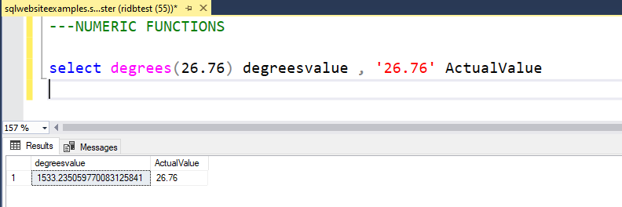

Examples on how we use these Functions
Here are some Screenshots with real time results of how you can use the Functions. If used in correct way , they can help is powerful SQL transformations , data mining , data analysis.
AVG
CEILING
COUNT
SUM
SIN
COS
COT
TAN
DEGREES
EXP
FLOOR
LOG
LOG10
ABS
ACOS
ATAN
ASIN
ATN2
MAX
MIN
PI
POWER
RADIANS
RAND
ROUND
SIGN
SQRT
SQUARE
We will use [AdventureWorks2012].[Person].[Person] table for this Function
SQL AVG() Function
AVG() function can be used to return the Average for a set of values in that field.

We will use [AdventureWorks2012].[Person].[Person] table for this Function
SQL CEILING() Function
CEILING( function can be used to return a values which is lesser or equal to the value over which this funtion is used.
We will use [AdventureWorks2012].[Person].[Person] table for this Function
SQL COUNT() Function
COUNT() function can be used to return the total number of records for that field.
If there are repeating values in a field and we need to find distinct count, we can write Count(distinct BusinessEntityID).
We will use [AdventureWorks2012].[Person].[Person] table for this Function
SQL SUM() Function
SUM() function can be used to return the sum of all values in a certain column.
We will use [AdventureWorks2012].[Person].[Person] table for this Function
SIN() Function
SIN() function can be used to return the SINE value.
We will use [AdventureWorks2012].[Person].[Person] table for this Function
SQL COS() Function
COS() function can be used to return the cosine value.
We will use [AdventureWorks2012].[Person].[Person] table for this Function
SQL COT() Function
COT() function can be used to return the COT value.
We will use [AdventureWorks2012].[Person].[Person] table for this Function
SQL TAN() Function
TAN() function can be used to return the TAN value.
We will use a certain value for this function
SQL DEGREES() Function
DEGREES() function can be used to converts a value in radians to degrees..
We will use a certain value for this function
SQL EXP() Function
EXP() function can be used to return EXPONENTIAL value raised.
We will use a certain value for this function
SQL FLOOR() Function
FLOOR() function can be used to return the largest integer value that is equal to or less.
We will use a certain value for this function
SQL LOG() Function
LOG() function can be used to return natural logarithm of 2.
We will use a certain value for this function
SQL LOG10() Function
LOG10() function can be used to return the base-10 logarithm of 2.
We will use a certain value for this function
SQL ABS() Function
ABS() function can be used to return the absolute value of a number.
We will use a certain value for this function
SQL ACOS() Function
ACOS() function can be used to return the arc cosine of a number.
We will use a certain value for this function
SQL ATAN() Function
ATAN() function can be used to return the arc tangent of a number.
We will use a certain value for this function
SQL ASIN() Function
ASIN() function can be used to return the arc sine of a number.
We will use a certain value for this function
SQL ATN2() Function
ATN2() function can be used to return the arc tangent of two values.
We will use [AdventureWorks2012].[Person].[Person] table for this Function
SQL MAX() Function
MAX() function can be used to return the maximum for a set of values, they can be grouped by another field as well.
We will use [AdventureWorks2012].[Person].[Person] table for this Function
SQL MIN() Function
MIN() function can be used to return the minimum for a set of values, they can be grouped by another field as well.
SQL PI() Function
PI() function can be used to return the value of PI.
We will use a certain value for this function
SQL POWER() Function
POWER() function can be used to return the value of a number raised to the power of another number..
We will use a certain value for this function
SQL RADIANS() Function
RADIANS() function can be used converts a degree value into radians..
We will use [AdventureWorks2012].[Person].[Person] table for this Function
SQL RAND() Function
RAND() function can be used return a random decimal number, its used in cases where we need to de identify data and give some random values are outputs.
We will use [AdventureWorks2012].[Person].[Person] table for this Function
SQL ROUND() Function
ROUND() function can be used to rounds a number to a specified number of decimal places.
We will use a certain value for this function
SQL SIGN() Function
SIGN() function can be used to returns the sign of a number
This function will return one of the following:
If number > 0, it returns 1
If number = 0, it returns 0
If number < 0, it returns -1
We will use [AdventureWorks2012].[Person].[Person] table for this Function
SQL ROSQUAREUND() Function
SQUARE() function can be used to return the SQUARE of a value.
We will use [AdventureWorks2012].[Person].[Person] table for this Function
SQL SQRT() Function
SQRT() function can be used to return the SQUARE ROOT of a value.